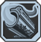
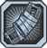
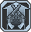
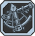
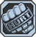
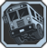

I'm Your Huckleberry
% Pistol Damage and Reload Speed per level.Locked & Loaded
Reloading gives % Fire Rate per level for a short time.Quick Draw
% Swap Speed and % Critical Hit Damage per level.
Keep It Piping Hot
% Gun Damage, % Accuracy, and % Critical Hit Damage per level while Overdrive is on cooldown.
+25% Reload Speed and +2 Mag Size.
Auto-Loader
Killing an enemy Instantly Reloads all of the guns that you have equipped that are not currently in your hands. Swapping guns after Auto-Loader has reloaded a gun triggers Locked & Loaded.+25% Reload Speed and +2 Mag Size.
All I Need is One
% Damage and % Multishot on your next shot after swapping weapons per level.Lay Waste
Kill Skill. Killing an enemy increases % Fire Rate and % Critical Hit Damage per level for a short time.Divergent Likeness
Increases Accuracy in Overdrive by %. % Accuracy when using two different types of guns in Overdrive. % Gun Damage when using two guns of the same type in Overdrive.Money Shot
The last shot fired from your magazine gains % Damage per level.Minimum mag size required for full bonus: 12. Magazines smaller than this gain a reduced bonus. Guns in your left hand assume the mag size of the gun in your right hand for the purposes of this skill.
No Kill Like Overkill
Any excess damage dealt to an enemy that kills them is transferred to the next enemy fired at.Gain 4% pure Gun Damage.
Down Not Out
Allows you to Overdrive in FFYL.You gain +50% Reload Speed, +30% Max Ammo, -40% Recoil, and Automatic Fire Mode with all Pistols.
0
Filled to the Brim
% Magazine Capacity and % Ammunition Capacity per level for all weapon types.All in the Reflexes
% Reload Speed and % Melee Damage per level.I'm Ready Already
Swap Speed and Overdrive Cooldown Rate per level.5 Shots or 6
Kill Skill. Killing an enemy gives % Fire Rate and Chance To Add Ammo instead of expend it.Resupply
While in Overdrive, regenerate Health, Ammo, and 0.20 Grenades and Rockets per second.
Last Longer
Overdrive Duration and % Basic Overdrive Bonuses per level.Inconceivable
Up to % Chance for Shots to Cost No Ammo and up to % Damage on up to % of your shots per level. The lower your Health and Shields, the higher the chances and bonuses are.Yippee Ki Yay
Killing an enemy while in Overdrive adds seconds to your Overdrive Duration per level.Recharge
Reloading or killing an enemy with a Critical Hit will restore % of Overdrive Cooldown per level. The Reload effect can only trigger every 40 seconds and the Critical Kill effect can only trigger every 80 seconds.Overcharge
When you activate Overdrive you recieve 350x less damage, +85% Fire Rate, +75% Reload Speed, and +33% Multishot for 9 seconds.
Sniper Rifle: +100% Spread, +175% Critical Hit Damage.
Shotgun: +3 Pellets, -35% Fire Rate,, -65% spread.
Assault Rifle: +65% Fire Rate, -225% Recoil.
Launcher: +200% Damage, +100% Shot Cost.
Pistol: +75% Reload Speed, -20% Fire Rate.
SMG: +5 Ammo Regen, +50% Mag Size, +25% Grenade and Explosive Damage.
Adaptation
The weapon in your left hand will affect the weapon in your right hand. If weapon in Left Hand is:Sniper Rifle: +100% Spread, +175% Critical Hit Damage.
Shotgun: +3 Pellets, -35% Fire Rate,, -65% spread.
Assault Rifle: +65% Fire Rate, -225% Recoil.
Launcher: +200% Damage, +100% Shot Cost.
Pistol: +75% Reload Speed, -20% Fire Rate.
SMG: +5 Ammo Regen, +50% Mag Size, +25% Grenade and Explosive Damage.
0
Hard to Kill
% Maximum Health and regenerate % of your Maximum Health per second per level.Incite
Taking damage gives % Movement Speed and % Reload Speed per level for a few seconds.Asbestos
% Negative Status Effect Duration per level.I'm the Juggernaut
Kill Skill. Killing an enemy gives % Damage Reduction for a short time.Ain't Got Time To Bleed
While Gunzerking you regenerate up to % of your Maximum Health per second per level depending on how low your health is.
Fistful of Hurt
Melee Override. Throw a heavy punch dealing massive damage and knockback. Has a cooldown of 15 seconds.All Out of Bubblegum
% Fire Rate per level when shield is depleted.
Bus That Can't Slow Down
% Movement Speed per level while Gunzerking.Just Got Real
Up to % Gun Damage per level depending on how low your health is.Sexual Tyrannosaurus
Taking damage gives % Health Regeneration per level for 5 seconds. This effect does not stack.Come At Me, Bro
While Gunzerking, you can press [Action Skill] to taunt your enemies into attacking you. You instantly heal to Full Health and gain massive damage reduction for a few seconds.
0